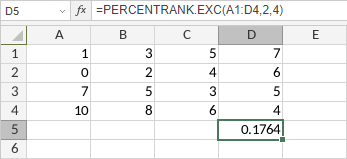

PERCENTRANK.EXC funkcija
PERCENTRANK.EXC funkcija je jedna od statističkih funkcija. Koristi se za vraćanje ranga vrednosti u skupu podataka kao procentualnu vrednost (0..1, ekskluzivno) skupa podataka.
Sintaksa
PERCENTRANK.EXC(array, x, [significance])
PERCENTRANK.EXC funkcija ima sledeće argumente:
| Argument | Opis |
|---|---|
| array | Odabrani opseg ćelija koji sadrži numeričke vrednosti. |
| x | Vrednost za koju želite da pronađete rang, numerička vrednost. |
| significance | Broj značajnih cifara za vraćanje ranga. Opcioni argument. Ako se izostavi, funkcija podrazumeva signifikantnost kao 3. |
Napomene
Kako primeniti PERCENTRANK.EXC funkciju.
Primeri
Slika ispod prikazuje rezultat koji vraća PERCENTRANK.EXC funkcija.
